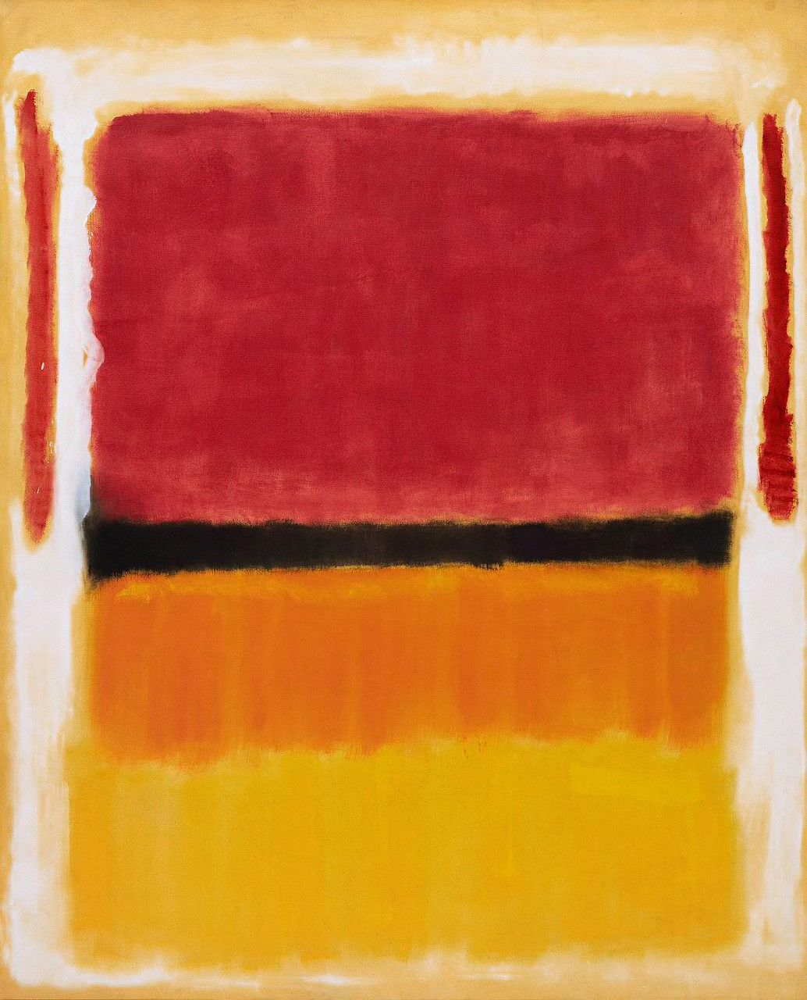

Lesson 1.1
Emotion as a Source
for Abstract Painting
In this lesson we use emotion as a source of inspiration.
Color patches — no figures, no objects.
Only color, sensation, and relationships.
Mark Rothko

Rothko worked this way.
The power in his paintings comes from the relationships between the patches —
not from what they depict.
Step 1
Choose 3–4 emotions
present right now.
They will be your source of inspiration.
Step 2
One color
for each emotion.
You are not painting the emotion — you are starting from it.
Step 3
Place the first patch
on the page.
Don't think about placement — let it land where it wants.
While Painting
Notice what happens
as you paint.
Soft or sharp
Flowing or cut
Transparent or opaque
Step 4
Add the rest
of the patches.
Choose placement — center, side, close, far.
Keep Going
Don't stop
between patches.
Look for the transitions — where color melts into color, where it stops.
Observe
Stop.
Look.
Who touches
Who blends
Who separates
The Principle
The painting is built
between the patches.
Emotion was the source of inspiration — the relationships built the painting.